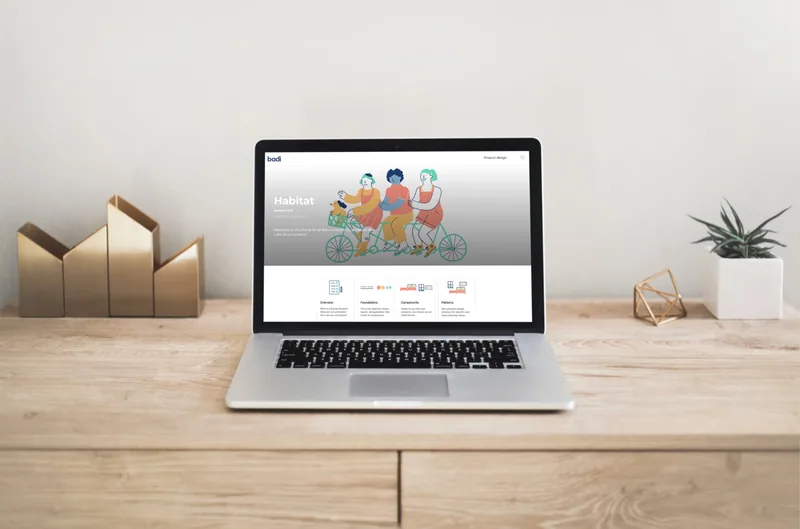
Starting with Research
We started gathering some google results of other DS companies in order to understand the meanings, therefore, find a name for our DS. The main purpose was to make developers and product designers live easier.
We started looking at Adele, the repository of design systems.
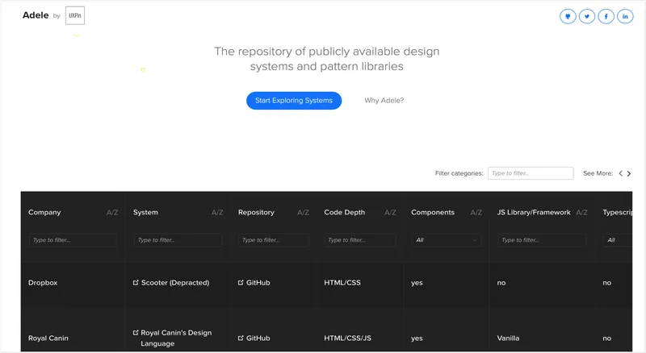
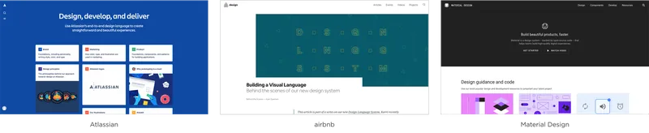
Naming
After that first research we continue with a naming brainstorming and then sharing and iterating the process with the whole ux team.
We got truly good result names related to Badi’s principales, homes, basic principal elements, and finally we decided to go into the one that better fits with Badi, Habitat.
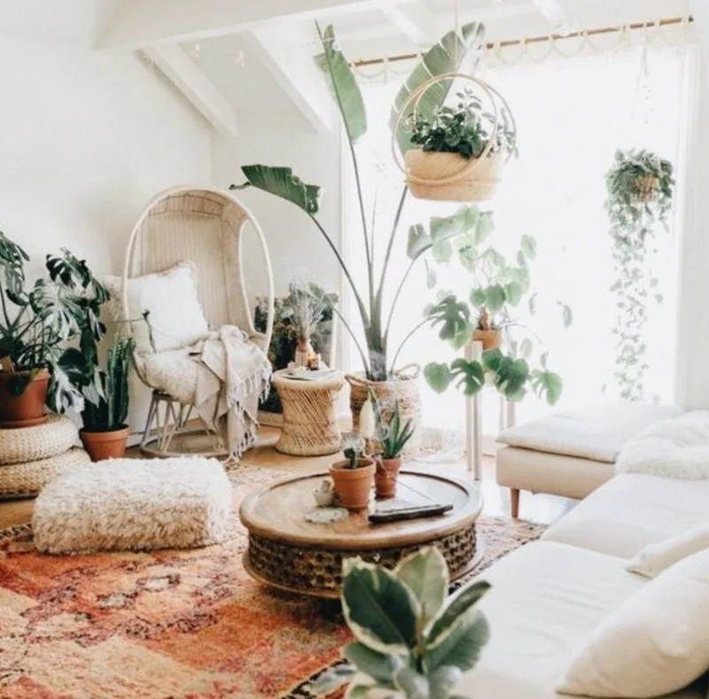
Habitat.
A habitat is the natural environment in which a particular species lives. The habitat for all our foundations, components and patterns is the Design System.
“We’ve updated Habitat.”
“You can check it on Habitat.”
“I’ll add it to Habitat.”
“Habitat is updated!”
Main Users: Dev & Designers
Next, we met with the main users of the Design System (DS), including core developers and product designers. In several meetings, we brainstormed ways to effectively adopt the atomic methodology. The DS team began organizing the elements of the DS to streamline the design process in Sketch and coding with developers. Atomic Design helps to use the best aspects of front-end frameworks and style guides, allowing us to describe and organize every component of the DS. Additionally, poor documentation can significantly reduce the reusability of design components.
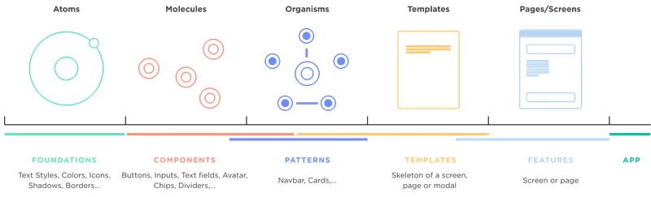
Sketch Library
Next challenge was, for DS designers team, to change sketch symbols into new sketch functionality with overrides and nested symbols.
For example, buttons, typography and text fields.
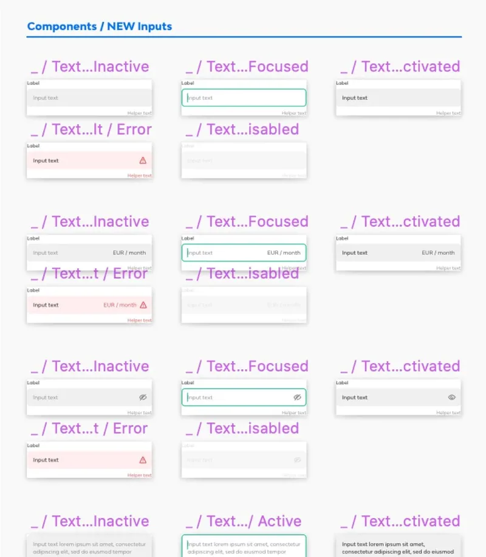
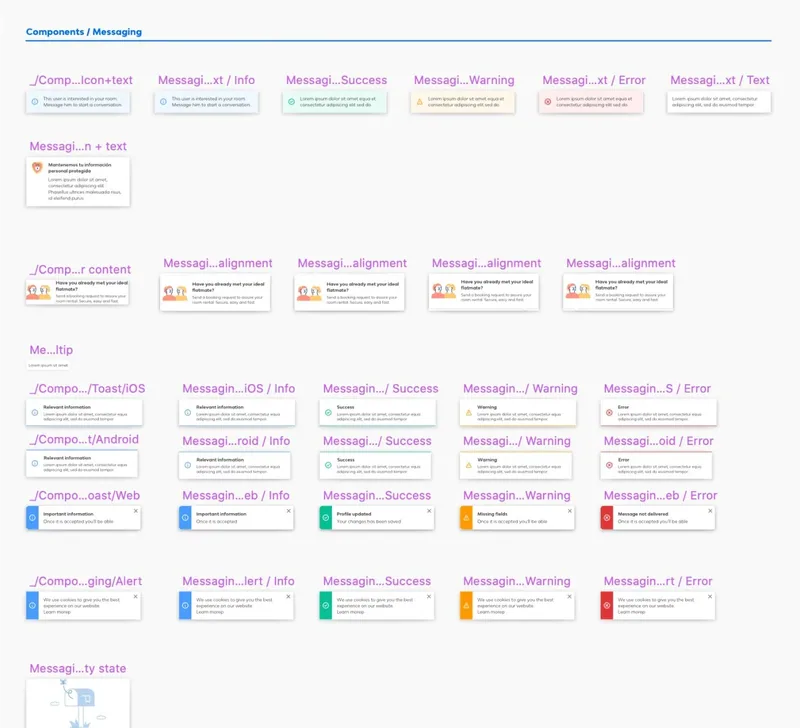
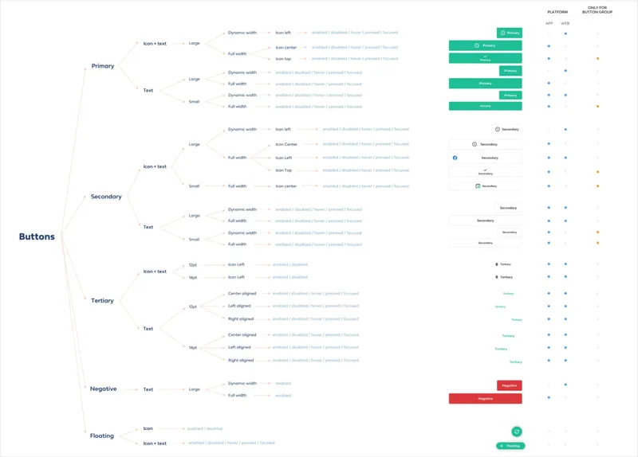
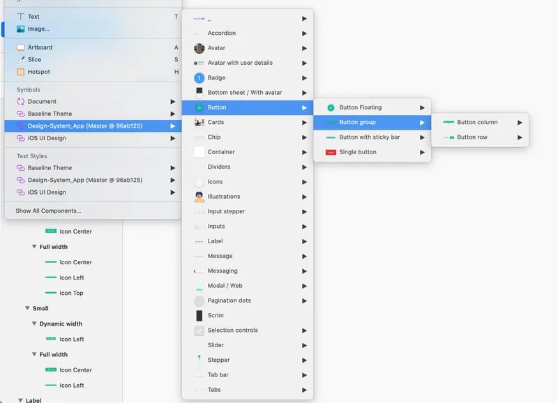
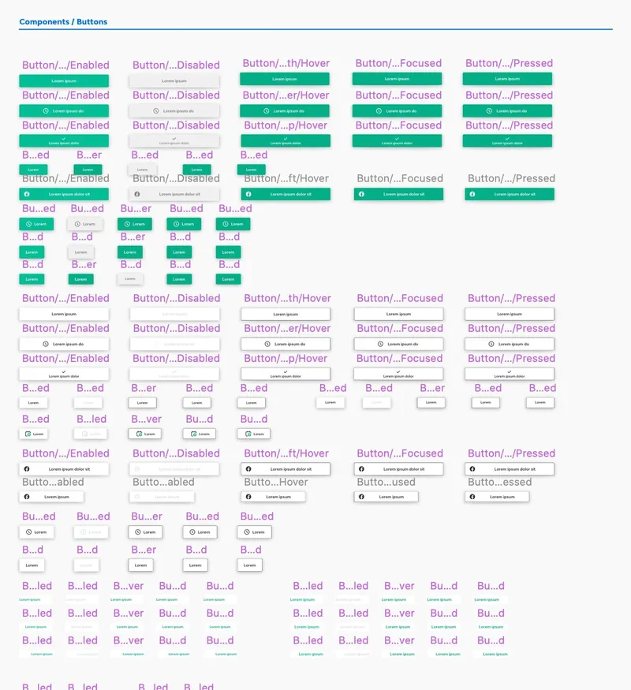
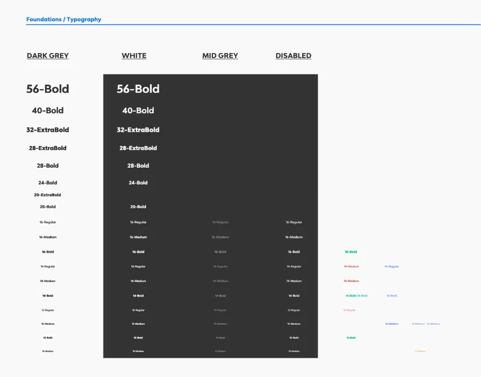
Working With Engineers
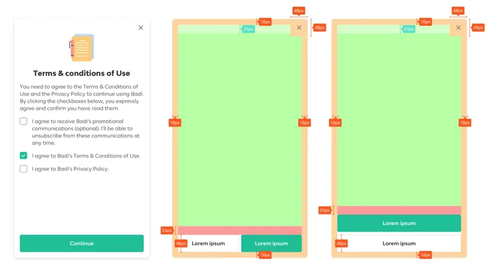
Developers and designers exchanged components using Abstract and Invision, allowing them to view all pixel measurements and colors accurately. To improve collaboration on design systems (DS), we researched the best platforms and, due to time constraints, chose Zeroheight, which doesn't require coding.
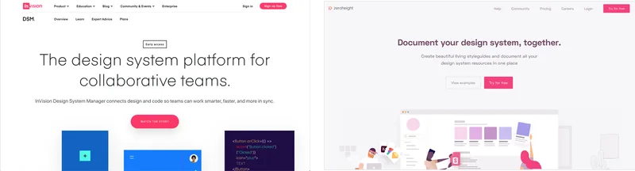
Designer’s Workflow
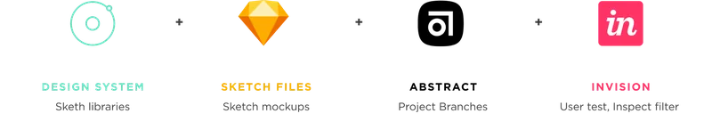
Every components was pixel perfect designed in order to be visually perfect and also easier for devs to code it. Always understanding how Android and iOs way of thinking structure were made.
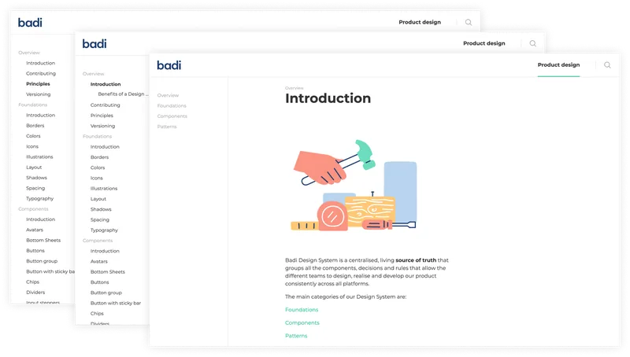
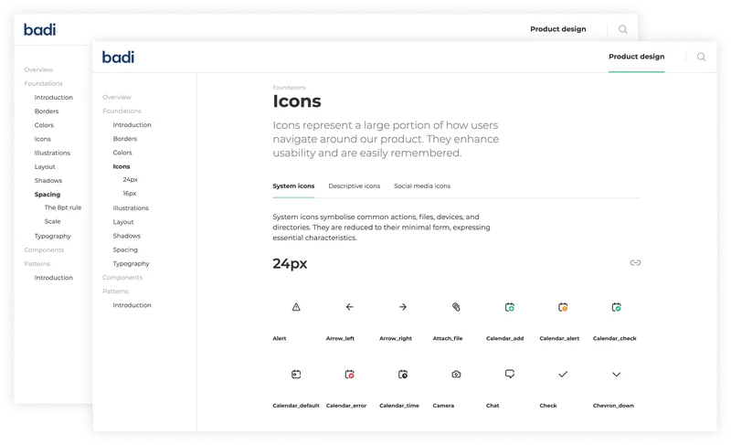
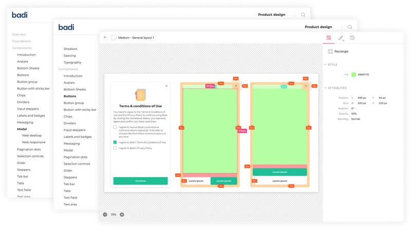
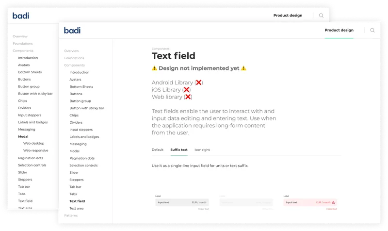